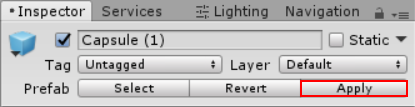

You can paint Trees onto a Terrain in a way that is similar to painting heightmaps and Textures. However, Trees are solid 3D objects that grow from the surface. Unity uses optimizations like billboarding for distant Trees to maintain good rendering performance. This means that you can have dense forests with thousands of Trees, and still keep an acceptable frame rate.
The Paint Trees button on the toolbar enables Tree painting:
Initially, the Terrain has no tree prototypes available. To start painting onto the Terrain, you need to add a tree prototype. Click the Edit Trees button, and select Add Tree. From here, you can select a Tree Asset from your Project, and add it as a Tree Prefab for use with the Brush:
To help prototyping, SpeedTree provides four SpeedTree models in the free SpeedTrees Package on the Asset Store. Alternatively, you can create your own Trees.
If the Tree Prefab that you are importing supports Bend Factor, the Add Tree window displays a Bend Factor property for adjusting wind responsiveness. Trees created with the SpeedTree Modeler don’t have a Bend Factor; only those created with Tree Editor do. See the section on Making Trees bend in the wind, below.
When you have configured your Settings (described below), you can paint Trees onto the Terrain in the same way you paint textures or heightmaps. To remove Trees from an area, hold the Shift key while you paint. To remove just the currently selected Tree type, hold down the Control key while you paint.
After you select which Tree to place, adjust its settings to customize Tree placement and characteristics.
| 属性 | 功能 |
|---|---|
| Mass Place Trees | Create an overall covering of Trees without painting over the whole landscape. After mass placement, you can still use painting to add or remove Trees to create denser or sparser areas. |
| Brush Size | Controls the size of the area that you can add Trees to. |
| Tree Density | Tree Density controls the average number of Trees painted onto the area defined by Brush Size. |
| Tree Height | Control the Tree’s minimal height and maximal height using a slider. Drag the slider to the left for short Trees, and right for tall Trees. If you uncheck Random, you can specify the exact scale for the height of all newly painted Trees within the range of 0.01 to 2. |
| Lock Width to Height | By default, a Tree’s width is locked to its height so that Trees are always scaled uniformly. However, you can disable the Lock Width to Height option, and specify the width separately. |
| Tree Width | If the Tree’s width is not locked to its height, you can control the Tree’s minimal width and maximal width using a slider. Drag the slider to the left for thin Trees, and right for wide Trees. If you uncheck Random, you can specify the exact scale for the width of all newly painted Trees within the range of 0.01 to 2. |
| Random Tree Rotation | If you configure the Tree with an LOD Group, use the Random Tree Rotation setting to help create the impression of a random, natural-looking forest rather than an artificial plantation of identical Trees. Uncheck this option if you want to place Trees with fixed, identical rotations. |
| Color Variation | The amount of random shading applied to Trees. This only works if your shader reads the _TreeInstanceColor property. For example, shaders for all trees you create with Tree Editor read the _TreeInstanceColor property. |
| Tree Lightmap Static | Enable this check box to indicate to Unity that the GameObject’s location is fixed, and that it will participate in Global Illumination computations. If a GameObject is not marked as Lightmap Static, you can still light it with Light Probes. |
There are two ways to create new Tree models. Use the SpeedTree Modeler from IDV, Inc. to create Trees with advanced visual effects, such as smooth LOD transition, fast billboarding, and natural wind animation. For more detailed information, refer to the SpeedTree Modeler documentation. Alternatively, use Unity’s Tree Editor to create Tree models.
Internally, the Terrain Engine distinguishes between the two types of models by determining whether an LOD Group is present on the Tree Prefab’s root GameObject. A SpeedTree Prefab has an LODGroup component, but a Tree Editor Prefab does not.
When creating Trees, position the anchor point at the base of the Tree where it emerges from the ground. Performance depends on the polygon count of your Tree model, so be sure to test on your platform, and create simpler Trees if necessary. Also, for Tree Editor Trees, each Mesh always has exactly two materials: one for the Tree body and the other for the leaves.
Trees you create using Tree Editor must use the Nature/Soft Occlusion Leaves and Nature/Soft Occlusion Bark shader. To use those shaders, you have to place Trees in a specific folder named Ambient-Occlusion, otherwise the Trees don’t render correctly. When you place a model in this folder and re-import it, Unity calculates soft ambient occlusion in a way that is specifically designed for Trees.
If you change an imported Tree Asset in a separate 3D modelling application, you need to click the Refresh button in the Editor to see the updated Trees on your Terrain:
Note: When you import and alter a SpeedTree model in a 3D modeling program, then re-export it (as an .fbx or .obj), you might lose the natural wind animation functionality that comes with SpeedTree models.
You can add a Capsule Collider to a new Tree Asset. First, drag the Prefab from your Assets folder into the Scene to instantiate the Tree in the Scene. Then, add the collider using menu: Component > Physics > Capsule Collider. Next, you can do one of the following:
Override the original Prefab: click the Apply button on the Tree GameObject in the Inspector Window:

Create a new Prefab: drag the Tree GameObject into your Assets folder.
If you create a new Prefab, make sure that you add the Tree with the Collider to the Terrain, rather than the original GameObject. You must also enable Create Tree Colliders in the Terrain’s Terrain Collider component.
This section only applies to Trees created with Unity’s Tree Editor, which have a Bend Factor.
To make Trees react to the wind, first select GameObject > 3D Object > Wind Zone to create a Wind Zone.
To make sure that your Trees are set up to bend, select your Terrain, click the Place Trees button in the Inspector, and then select Edit Trees > Edit Tree. Set the Bend Factor to 1 if you have not already done so.
With the default settings, Trees move quite violently. To fix this, change the Bend Factor for each individual Tree type. This is useful if you want some Tree types to bend more than others. To change the bend effect in the entire Wind Zone, directly configure the values in the Wind Zone component. To reduce the fluttering effect of the leaves, adjust the wind turbulence down to around 0.1–0.3, and everything becomes much smoother. If you don’t want the Trees blowing all the way to one side, and instead want some variation, set the Main value down to the same value as your turbulence.
For Tree Editor Trees, Unity’s LOD system uses a 2D to 3D transition zone to seamlessly blend 2D billboards with 3D Tree models. This prevents any sudden popping of 2D and 3D Trees, which is vital in VR.
For SpeedTree Trees, see the LOD and LOD Group documentation for more information about configuring LOD components.
2019–04–19 Page amended with no editorial review
Updated screenshot to match new UI